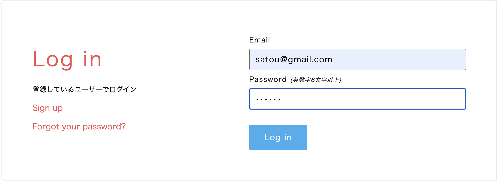
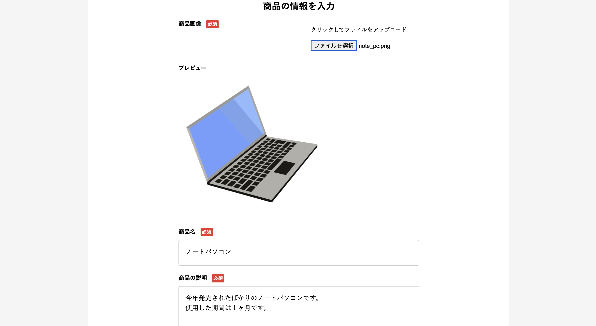
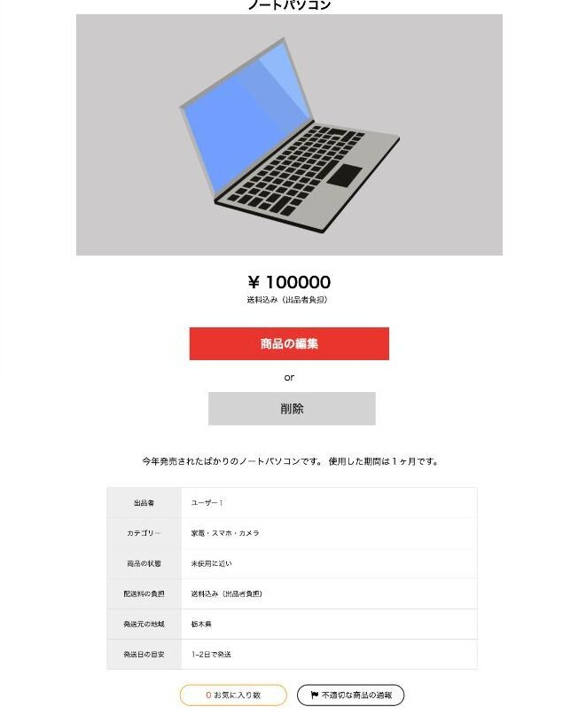
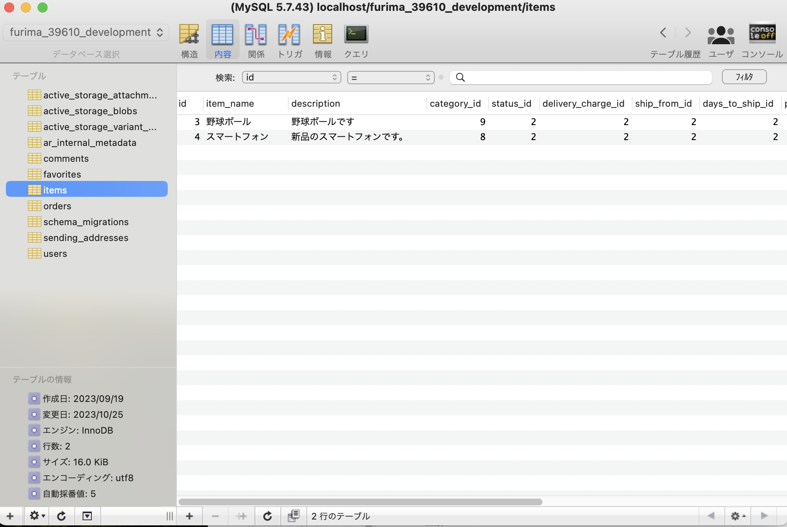

学習スケジュール
カリキュラム学習
実践
準備
基礎
応用
発展
最終課題
現場配属準備
・HTML
・CSS
・Linux
・SQL
・GitHub
・Ruby on Rails
・Rspec
・JavaScript
・Render
・アプリ開発
・事前学習支援
基礎
応用
発展
最終課題
現場配属準備
・HTML/CSSの基礎的な箇所を学んでいきます。
・Webアプリケーションの仕組みについて学びます。
・基礎的なCLI操作を学び、Linuxコマンドに触れていきます。
・Webアプリケーションの仕組みについて学びます。
・基礎的なCLI操作を学び、Linuxコマンドに触れていきます。
・Ruby on Railsを使い、実際にWebアプリケーションを作成します。
・GitHubを用いて、簡単にファイル管理をしていきます。
・RSpecでテストコードの記述を行います。バグやエラーを見つけやすくします。
・GitHubを用いて、簡単にファイル管理をしていきます。
・RSpecでテストコードの記述を行います。バグやエラーを見つけやすくします。
・JavaScriptを使い非同期通信を行います。
・無料のサーバーを利用して、アプリケーションをWeb上に公開します。
・基礎で学んだWebアプリケーションの仕組みについて深堀りします。
・無料のサーバーを利用して、アプリケーションをWeb上に公開します。
・基礎で学んだWebアプリケーションの仕組みについて深堀りします。
・今まで学んだことを活かしてアプリケーションを制作します。
・メンターからコードレビューを頂き、細かな箇所まで修正を行います。
・終了した場合、追加機能の実装やオリジナルアプリの作成ができます。
・メンターからコードレビューを頂き、細かな箇所まで修正を行います。
・終了した場合、追加機能の実装やオリジナルアプリの作成ができます。
・グループワークを行い、実践経験を養います。
・配属先で活かせるようなビジネスマナーを学びます。
・Excelの基礎知識を身に付けます。
・配属先で活かせるようなビジネスマナーを学びます。
・Excelの基礎知識を身に付けます。
一日の流れ
朝礼
↓
復習・演習
↓
昼休憩
↓
集中学習
カリキュラム学習
↓
アウトプット
↓
休憩
↓
終礼
・集中力を高めるための瞑想をグループで行います。
・本日の行動指針や目標設定をして、グループ内で発表をします。
・発表後は情報共有や日常会話等で交流を深めます。
・本日の行動指針や目標設定をして、グループ内で発表をします。
・発表後は情報共有や日常会話等で交流を深めます。
・ドリルを使い、カリキュラムの復習をします。
・実務を想定したカリキュラムで知識を深めます。
・実務を想定したカリキュラムで知識を深めます。
・午後の学習のために、一時間休憩を取ります。
・カリキュラムを用いて学習を進行します。
・学習が滞ったら、メンターに相談することも可能です。
・学習が滞ったら、メンターに相談することも可能です。
・学んだ事や不明点等をグループ内で発表します。
・学習内容を言語化することで理解度が上がります。
・学習内容を言語化することで理解度が上がります。
・十分間休憩を取ります。
・カリキュラム学習→アウトプット→休憩を4回繰り返します。
・カリキュラム学習→アウトプット→休憩を4回繰り返します。
・カリキュラムの進捗状況を整理し、自己評価を行います。
・良かった点/悪かった点を整理し、今後の学習プランを立てます。
・上記内容をレポート提出します。
・良かった点/悪かった点を整理し、今後の学習プランを立てます。
・上記内容をレポート提出します。
制作物一覧
トークアプリ
(応用課題)
・チャット画面
メッセージの投稿だけではなく、画像の投稿も可能となっています。
チャットルームを作成し、目的に合わせたチャットが出来ます。

チャットルームを作成し、目的に合わせたチャットが出来ます。
・ログイン画面
データベース上でユーザーデータを管理しています。
登録されたメールアドレスとパスワードを入力するとログインできます。
不一致の場合にはエラーメッセージを出力して再度ログインさせる仕組みになっています。
登録されたメールアドレスとパスワードを入力するとログインできます。
不一致の場合にはエラーメッセージを出力して再度ログインさせる仕組みになっています。
フリマアプリ
(最終課題)
・トップページ
上部のヘッダーはログイン状況によって表示するものを変更しています。
ログインしていない場合は「新規登録画面」「ログイン画面」へのリンク、
ログインしている場合は「ログアウト」のボタンとログイン中のユーザー名を記載しています。

ログインしていない場合は「新規登録画面」「ログイン画面」へのリンク、
ログインしている場合は「ログアウト」のボタンとログイン中のユーザー名を記載しています。
・商品出品ページ
商品名や商品の画像を設定して出品することができます。
出品したらデータベース上に保存がされます。

出品したらデータベース上に保存がされます。
・商品ページ
出品した商品の詳細を閲覧することができます。
自身が出品した商品は情報の編集や削除が行えます。
また、別のユーザーが出品した商品は購入することができます。

自身が出品した商品は情報の編集や削除が行えます。
また、別のユーザーが出品した商品は購入することができます。
・データ管理
商品やユーザーなどの情報はこの画像のようにデータベースで管理を行っています。